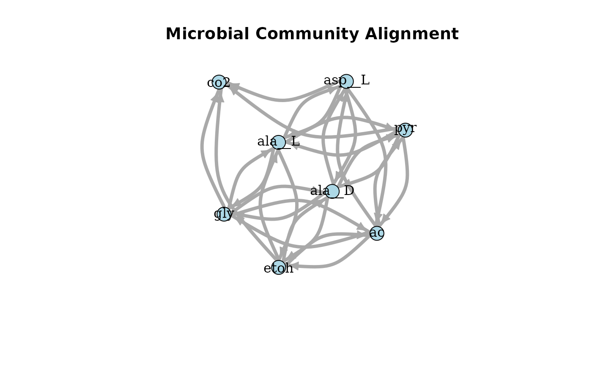
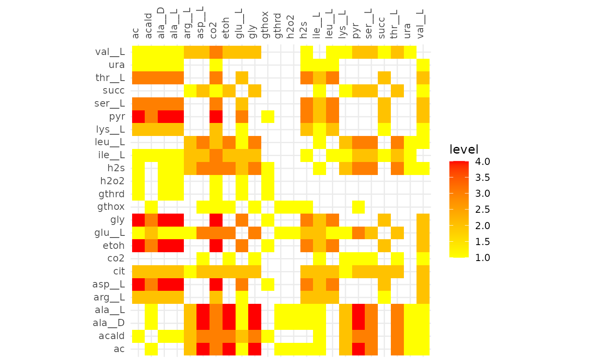

Alignment of Communities with Different Functional Types
ex2-func_groups.RmdBasic Tutorial
Create a MiCo Object
fsmc contains a set of example data that can be used for
the analysis of microbial communities. For this example, we will use
data created by MiSoS(oup). Two example
communities are provided in the package ac_A1R12_1 and
cit_A1R12_1.
The MiCo function can take either a path to a .csv file
or a data frame/tibble as input.
# Inspect the data
ac_A1R12_1
#> metabolites species fluxes
#> 1 ac A1R12 0.77292503
#> 2 ac I2R16 -10.76733455
#> 3 acald A1R12 -1.12096390
#> 4 acald I2R16 1.12096390
#> 5 ala__D A1R12 0.76031357
#> 6 ala__D I2R16 -0.76031357
#> 7 ala__L A1R12 1.21684157
#> 8 ala__L I2R16 -1.21684157
#> 9 asp__L A1R12 -0.58268031
#> 10 asp__L I2R16 0.58268031
#> 11 co2 A1R12 0.61840930
#> 12 co2 I2R16 12.12608512
#> 13 etoh A1R12 -0.18475279
#> 14 etoh I2R16 0.18475279
#> 15 glu__L A1R12 0.50682546
#> 16 glu__L I2R16 -0.50682546
#> 17 gly A1R12 -0.02158742
#> 18 gly I2R16 0.02158742
#> 19 gthox A1R12 1.45273848
#> 20 gthox I2R16 -1.45273848
#> 21 gthrd A1R12 -2.90547696
#> 22 gthrd I2R16 2.90547696
#> 23 h2o2 A1R12 -1.45273848
#> 24 h2o2 I2R16 1.45273848
#> 25 h2s A1R12 -0.00238294
#> 26 h2s I2R16 0.00238294
#> 27 pyr A1R12 -2.01918234
#> 28 pyr I2R16 2.01918234
cit_A1R12_1
#> metabolites species fluxes
#> 1 ac A1R12 10.072387832
#> 2 ac m_1A01 -10.072387832
#> 3 acald A1R12 8.313282235
#> 4 acald m_1A01 -8.313282235
#> 5 ala__D A1R12 1.296902243
#> 6 ala__D m_1A01 -1.296902243
#> 7 ala__L A1R12 1.895352540
#> 8 ala__L m_1A01 -1.895352540
#> 9 arg__L A1R12 -0.002864506
#> 10 arg__L m_1A01 0.002864506
#> 11 asp__L A1R12 -1.208257612
#> 12 asp__L m_1A01 1.208257612
#> 13 cit A1R12 -9.984232514
#> 14 cit m_1A01 -0.015767486
#> 15 co2 A1R12 5.025755125
#> 16 co2 m_1A01 11.498625545
#> 17 etoh A1R12 -10.022199622
#> 18 etoh m_1A01 10.022199622
#> 19 glu__L A1R12 1.144004523
#> 20 glu__L m_1A01 -1.144004523
#> 21 gly A1R12 -1.094858850
#> 22 gly m_1A01 1.094858850
#> 23 h2s A1R12 0.248451996
#> 24 h2s m_1A01 -0.248451996
#> 25 ile__L A1R12 0.293347327
#> 26 ile__L m_1A01 -0.293347327
#> 27 leu__L A1R12 0.454901455
#> 28 leu__L m_1A01 -0.454901455
#> 29 pyr A1R12 -5.293129303
#> 30 pyr m_1A01 5.293129303
#> 31 ser__L A1R12 -0.003532705
#> 32 ser__L m_1A01 0.003532705
#> 33 succ A1R12 9.984081286
#> 34 succ m_1A01 -9.984081286
#> 35 thr__L A1R12 -0.297725162
#> 36 thr__L m_1A01 0.297725162
#> 37 val__L A1R12 0.427848544
#> 38 val__L m_1A01 -0.427848544
# Create MiCo objects
mc1 <- newMiCo(ac_A1R12_1)
mc2 <- newMiCo(cit_A1R12_1)
mc3 <- newMiCo(ac_A1R12_2)
mc4 <- newMiCo(cit_A1R12_2)
# Inspect MiCo Objects
mc1
#> ac_A1R12_1: MiCo (MicrobialCommunity) Object
#> - Unique microorganisms (MO): 2
#> - Unique metabolites (met): 14
mc1
#> ac_A1R12_1: MiCo (MicrobialCommunity) Object
#> - Unique microorganisms (MO): 2
#> - Unique metabolites (met): 14Align MiCo Objects
Two MiCo objects can be aligned by creating a
MiCoAl object. The MiCoAl creator function can
take any number of MiCo objects as input.
# Align the MiCo objects by creating a MiCoAl object
alignment <- newMiCoAl(mc1, mc2, mc3, mc4)
# Inspect the alignment
alignment
#> Microbial Community Alignment Object (MiCoAl)
#> Alignment of 4 communities with an overall score of ### ToDo ###.Analysis of the Alignment
plotAlignmentNetwork(alignment, 0.8)
plotAlignmentHeatmap(alignment, 0.2)
Experiment 2
- Set of 20 species
- 10 consortia with 5-10 species each
- each consortia in 2 different types of media
- align the solutions for each media type
- identify central and peripheral consortia
- compare the central and peripheral consortia by running them in 10 different types of media
Questions: - Are central consortia more optimised/generalist? - Are peripheral consoria elastic/adaptable or specialists?
Ch
Findings
cons1: - LB 5 species grow - M9 3 species
cons2 didn’t work
cons3: - LB 4 species - M9 2 species
cons4: - iYO844 is the only strain that grows - in M9 it consumes all of the glc and produces acald_e in LB it produces co2
cons5: - on LB multiple strains grow until glucose runs out but continue growing despite this. Probably a good first consortium - on M9 only iMM904 grows, but only until glucose runs out
cons6: - on LB 3 species grow - on M9 2 species grow, what are the differences to LB? could be interesting
cons7: - LB 3 species grow rapidly and iY0844 slowly - M9 iY0844 grows equally slow and one rapid species again
cons8: - LB one slow one fast - M9 no growth
cons9: - LB 5 species grow, one even after the glucose runs out. Might be interesting - on M9 two species
cons10 - LB 6/9 species grow - M9 3 species
cons11 - iYL1228 and iMM904 grow on both, interesting to see how similar between them
cons12 - didnt work
cons13 - iY0844 grows equally good on both
cons14 - 4/5 species grow on LB
cons15 - iYL11228 only on both
cons16 & 17 didnt work
cons18 - LB 2 species grow - M9 only STM_v1_0
cons19 - STM_v1_0 only on both
run again with death rate and as chemostat to see what happens